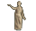

Icones utilitzades a l'OPAC
Icones utilitzades a les publicacions periòdiques: article
article publicació periòdica
publicació periòdica
 text imprès
text imprès - text manuscrit
 partitura musical impresa
partitura musical impresa  partitura musical manuscrita
partitura musical manuscrita  document cartogràfic imprès
document cartogràfic imprès  document cartogràfic manuscrit
document cartogràfic manuscrit  document projectat o vídeo
document projectat o vídeo - enregistrament sonor no musical
 enregistrament sonor musical
enregistrament sonor musical  document gràfic de dues dimensions
document gràfic de dues dimensions  document electrònic
document electrònic  document multimèdia
document multimèdia-  objecte de 3 dimensions , artefactes, ...
Les monografies es representen únicament amb la icona del seu tipus de suport.
Exemple :